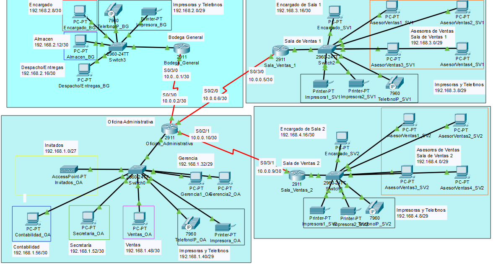
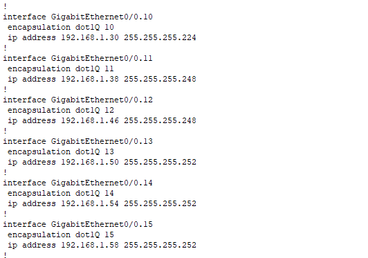
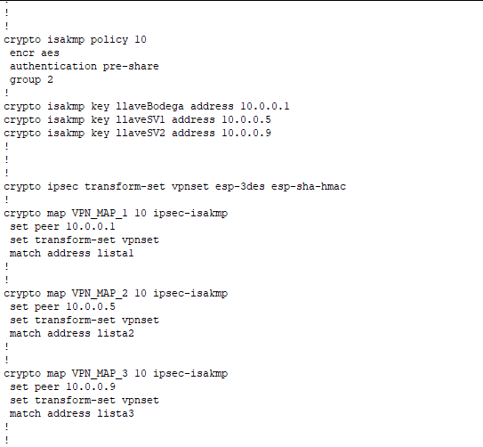

Esto es una propuesta de red para una empresa con varias sucursales, cada una con oficinas y algunos dispositivos como impresoras. La empresa buscaba tener seguridad asi que se opto por usar VPN.
Como primer punto se realizó un diagrama en donde se distribuyeron las diferentes oficinas de cada sucursal de la empresa.
Justo despues de la distribucion se trabajó en las subredes que necesitaría para los diferentes segmentos de la red.
Como la empresa buscaba seguridad se implementó una VPN.
